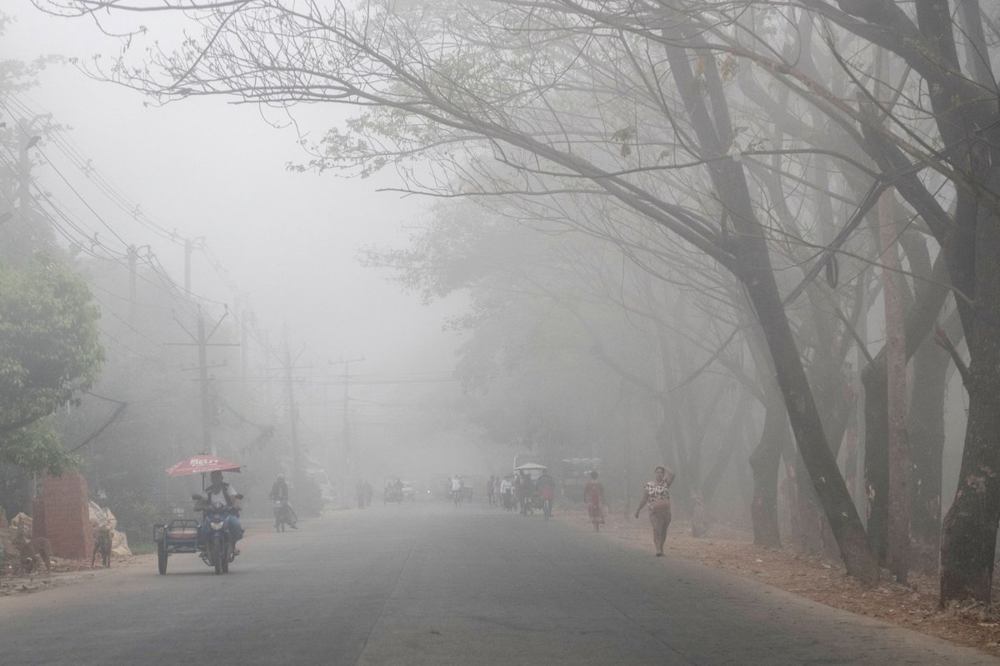
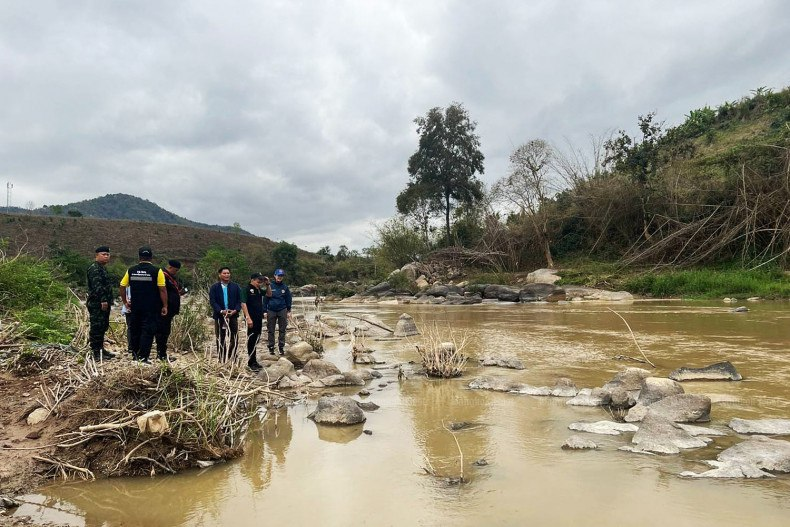
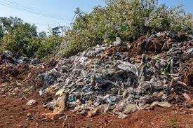
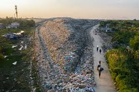

Air pollution in Yangon is a growing concern, mainly caused by vehicle emissions, diesel generators, construction dust, and occasional burning of waste. The level of pollution changes depending on the weather and time of year, but it can sometimes reach unhealthy levels due to fine particles called PM2.5. During these times, the air may appear hazy and can make breathing uncomfortable, especially for children, older adults, and people with respiratory conditions. Rainy seasons usually help improve air quality, while dry periods tend to make pollution worse.
Water pollution in Yangon is a serious issue caused by untreated sewage, industrial waste, and garbage entering rivers and canals. Many waterways become contaminated, especially during the rainy season when runoff carries more waste into them. This affects water quality, harms aquatic life, and can create health risks for people who rely on these sources.


Land pollution in Yangon is mainly caused by improper waste disposal, plastic litter, and growing construction activities. Garbage is often dumped in open areas or not properly managed, which leads to dirty streets and clogged drainage systems. This pollution can harm the environment, spread disease, and reduce the quality of life in the city.
Plastic pollution in Yangon is a growing problem caused by single-use plastics like bags, bottles, and food packaging that are often not properly disposed of. Much of this waste ends up in streets, drains, and rivers, where it can block waterways and harm animals. Limited recycling and waste management make the issue worse, especially during heavy rains when plastics are washed into larger water systems.
